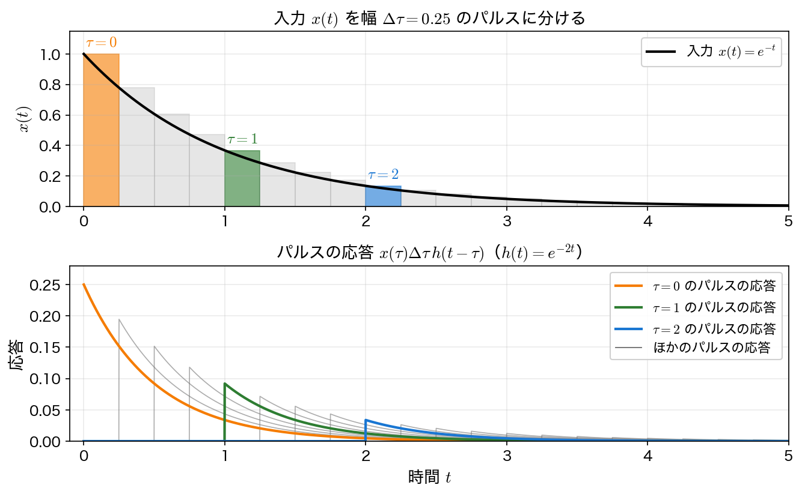
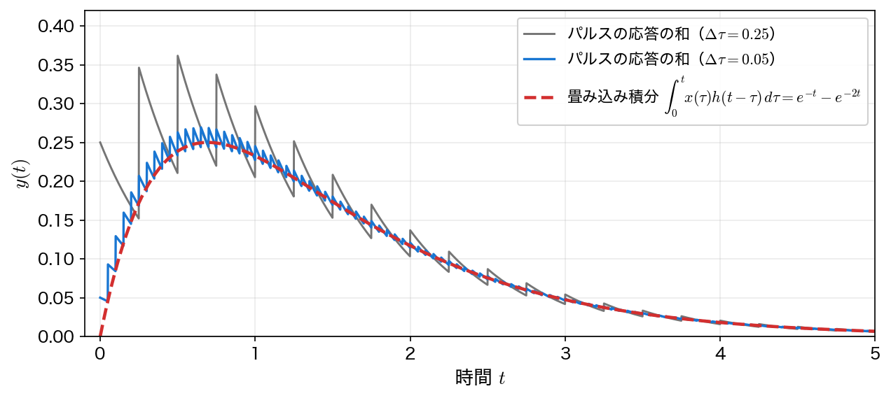
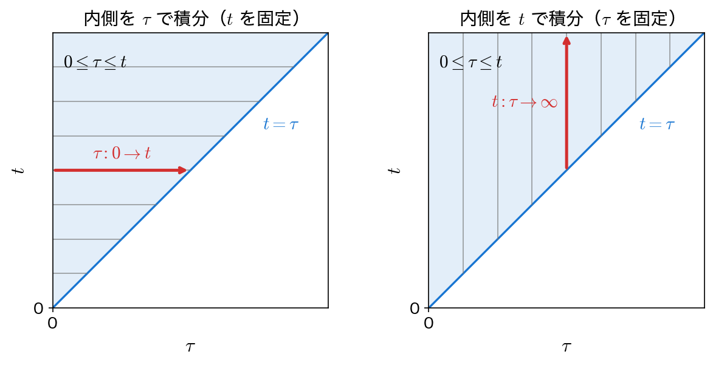
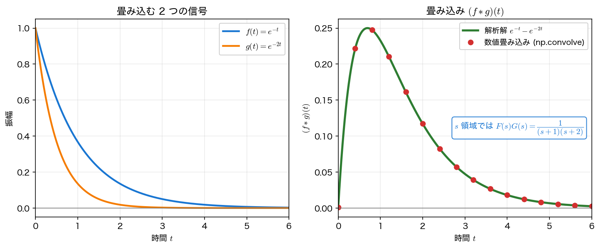
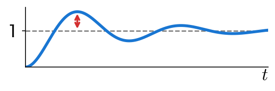
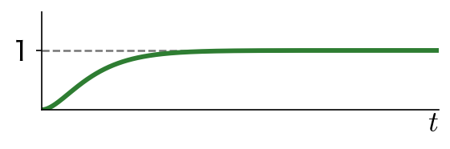
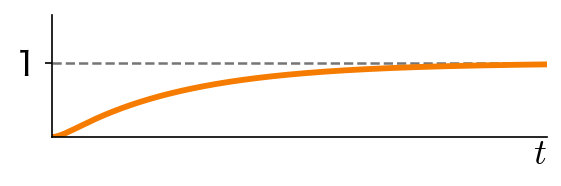

畳み込み積分と伝達関数
第6回では、入力のない \(y''+3y'+2y=0\) を初期値から解いた。本ページでは右辺に入力のある 入力のあるシステム に進む。入力と出力を結ぶ 畳み込み積分 をパルスの和から導き、それを \(s\) 領域の積に変える 畳み込み定理 \(\mathcal{L}[f*g]=F(s)G(s)\) を示す。そこから、システムを \(s\) 領域で表す 伝達関数 \(H(s)\) を導入し、2 次系のステップ応答を極の位置から読む。
入力のあるシステムと畳み込み
入力のあるシステム
次の微分方程式は、右辺に時間の関数 \(x(t)\) をもつ。
外から加える信号 \(x(t)\) を 入力、それに応じて決まる \(y(t)\) を 出力 と呼ぶ。入力は \(t\ge0\) で加え、\(t<0\) では \(x(t)=0\) とする。本節の問いは、どんな入力 \(x(t)\) に対しても、出力 \(y(t)\) を 1 つの式で書けないか、である。
線形・時不変（LTI）システム
入力 \(x(t)\) から出力 \(y(t)\) が決まる仕組みを システム と呼び、\(x\to y\) と書く。
- 線形：\(x_1\to y_1\), \(x_2\to y_2\) なら、定数 \(a\), \(b\) について \(ax_1+bx_2\to ay_1+by_2\) となる（重ね合わせ）。
- 時不変：\(x(t)\to y(t)\) なら \(x(t-\tau)\to y(t-\tau)\) となる。入力を遅らせると、出力も同じだけ遅れる。
両方を満たすシステムを 線形時不変（Linear Time-Invariant, LTI）システム と呼ぶ。第1回の「線形時不変系」と同じものである。定数係数の線形微分方程式は、初期値がすべて \(0\) の状態（零状態）から始めれば LTI システムになる。
インパルス応答
零状態のシステムに \(x(t)=\delta(t)\) を入れたときの出力を インパルス応答 と呼び、\(h(t)\) と書く。\(\delta(t)\) は、幅を \(0\) に縮めた面積 \(1\) のパルスだった（第6回）。\(h(t)\) はシステムだけで決まり、入力によらない。入力 \(x(t)\) は外から自由に選んで与える。
- 時不変性から \(\delta(t-\tau)\to h(t-\tau)\)、線形性から \(c\,\delta(t-\tau)\to c\,h(t-\tau)\) となる（\(c\) は定数）。
- 入力を加える前に出力は出ない（因果性）ので、\(t<0\) では \(h(t)=0\) である。
第4回で周波数応答 \(H(\omega)\) の逆フーリエ変換として出てきた \(h(t)\) と同じものである。
以下では、代表の入力 \(\delta(t)\) への出力 \(h(t)\) が分かれば、どんな入力 \(x(t)\) への出力 \(y(t)\) も、\(h(t)\) を使った積分 1 つで求まることを示す。
入力をパルスに分ける
入力 \(x(t)\) を幅 \(\Delta\tau\) の細いパルスに分ける。時刻 \(\tau\) のパルスは高さ \(x(\tau)\)、面積 \(x(\tau)\Delta\tau\) なので、\(x(\tau)\Delta\tau\,\delta(t-\tau)\) で近似できる。前項より、その応答は \(x(\tau)\Delta\tau\,h(t-\tau)\) になる。

図では、入力に \(x(t)=e^{-t}\) を選んだ。システムは \(y'+2y=x\) で、\(h(t)=e^{-2t}\) はこれで決まる（求め方は次節）。
パルスの応答を足す
線形性から、出力はパルスの応答の和になる。\(\Delta\tau\to0\) で和は積分になる。
\(\tau_k=k\Delta\tau\)（\(k=0,1,2,\dots\)）はパルスの時刻である。積分の範囲が \([0,t]\) なのは、\(\tau<0\) では \(x(\tau)=0\)、\(\tau>t\) では \(h(t-\tau)=0\) だからである。

畳み込み積分
この形の積分を 畳み込み積分 と呼び、\(x*h\) と書く。
- 時刻 \(t\) の出力は、過去の各時刻 \(\tau\) の入力 \(x(\tau)\) を、経過時間 \(t-\tau\) の応答 \(h(t-\tau)\) で重み付けして足したものである。
- \(h\) が速く減衰するシステムほど、古い入力を早く忘れる。
- \(h(t)\) が分かれば、どんな入力 \(x(t)\) に対しても出力が決まる。
第3・4回の畳み込みは \(\int_{-\infty}^{\infty}\) の形だった。\(t<0\) で \(x=0\)、\(h=0\) なので、範囲が \([0,t]\) に縮む。\(v=t-\tau\) と置き換えると、\(x*h=h*x\) も分かる。
零入力応答と零状態応答
畳み込み積分は、零状態から始めたときの出力を与える。これを 零状態応答 と呼ぶ。入力が \(0\) でも、初期値だけで生じる出力を 零入力応答 と呼ぶ。第6回の \(2e^{-t}-e^{-2t}\) はこれである。初期値があり入力もあるときの出力は、線形性から 2 つの和になる。
以下、断りのない限り零状態とする。
畳み込み定理と伝達関数
畳み込み定理
\(t\ge0\) の関数 \(f(t)\), \(g(t)\) のラプラス変換を \(F(s)\), \(G(s)\) とすると、次が成り立つ。
時間領域の畳み込みが、\(s\) 領域では 積 になる。第3回のフーリエ変換の畳み込み定理と同じ形である。以下の 3 段で導く。
① 定義に代入する。 ラプラス変換の定義に畳み込み積分を入れると、2 重積分になる。
内側は \(t\) を固定して \(\tau\) を \(0\) から \(t\) まで、外側は \(t\) を \(0\) から \(\infty\) まで積分する。積分する範囲は、\((\tau,t)\) 平面の \(0\le\tau\le t\) の領域になる。このままでは \(F(s)\) も \(G(s)\) も現れない。
② 積分の順序を入れ替える。 同じ領域を、\(\tau\) を固定して \(t\) を \(\tau\) から \(\infty\) まで積分してもよい。\(f(\tau)\) は内側の積分の変数 \(t\) を含まないので、外に出せる。
順序を入れ替えてよい条件には立ち入らない。

③ \(v=t-\tau\) と置く。 内側で \(v=t-\tau\) と置く。\(t=\tau\) で \(v=0\)、\(dt=dv\)、\(e^{-st}=e^{-s\tau}e^{-sv}\) なので
となる。これを外側に戻すと
を得る。
伝達関数
\(X(s)=\mathcal{L}[x(t)]\), \(Y(s)=\mathcal{L}[y(t)]\) として、LTI システムの出力 \(y=x*h\) に畳み込み定理を使うと
を得る。\(H(s)\) を 伝達関数（transfer function） と呼ぶ。零状態での入出力の比で、入力の選び方に依らない、システムそのものの性質である。
- \(x(t)=\delta(t)\) なら \(X(s)=1\) なので \(Y(s)=H(s)\)、つまり出力は \(h(t)\) になる。
- どんな入力でも、\(X(s)\) に \(H(s)\) を掛けて逆変換すれば出力が出る。
ROC が虚軸を含めば、\(s=i\omega\) と置いた \(H(i\omega)\) が第4回の周波数応答 \(H(\omega)\) になる。第1回は伝達関数を \(G(s)=Y(s)/U(s)\) と書いたが、本講義では \(u(t)\) をステップ関数に使うので、入力を \(x\)、伝達関数を \(H\) と書く。
例：\(y'+2y=x(t)\) の伝達関数
零状態で両辺を変換すると \((s+2)\,Y(s)=X(s)\) なので
となる。前節の図で使ったインパルス応答である。入力 \(x(t)=e^{-t}\)（\(X(s)=\frac{1}{s+1}\)）に対する出力は、\(s\) 領域では \(Y(s)=\dfrac{1}{(s+1)(s+2)}\)、時間領域では \(e^{-t}*e^{-2t}\) である。この出力を、時間領域と \(s\) 領域の両方で求める。
例：\(e^{-t}*e^{-2t}\) を定義から求める
\(f(t)=e^{-t}\), \(g(t)=e^{-2t}\) を畳み込む。\(e^{-2(t-\tau)}=e^{-2t}e^{2\tau}\) の \(e^{-2t}\) は \(\tau\) によらないので、積分の外に出す。
これは前節の図（入力 \(e^{-t}\)、インパルス応答 \(e^{-2t}\)）の赤の破線である。時間領域では、積分の計算が要る。
例：\(s\) 領域で求める
\(F(s)=\dfrac{1}{s+1}\), \(G(s)=\dfrac{1}{s+2}\) の積を部分分数に分ける。
両辺に \((s+1)(s+2)\) を掛けると \(1=A(s+2)+B(s+1)=(A+B)s+(2A+B)\)。係数を比べて
を得る。表 \(\dfrac{1}{s+a}\leftrightarrow e^{-at}\) で戻すと \(e^{-t}-e^{-2t}\) となり、積分せずに前項と同じ結果が出る。
sympy の準備
本回の sympy のコードは、すべて次のブロックの続きで動く。
import sympy as sp
t = sp.symbols("t", positive=True) # 時間は t>=0
s = sp.symbols("s") # 複素変数なので仮定を付けない
tau = sp.symbols("tau", positive=True) # 畳み込みの積分変数 τ
def L(f):
return sp.simplify(sp.laplace_transform(f, t, s, noconds=True))
def Linv(F):
return sp.expand(sp.inverse_laplace_transform(F, s, t))
第6回と同じ準備に、畳み込みの積分変数 tau（\(\tau\)）を足した。L は変換した式を sp.simplify で整理する。noconds=True は ROC の条件を省く。Linv は逆変換した式を sp.expand で展開する。
sympy で畳み込み定理を確かめる
f = sp.exp(-t) # F(s) = 1/(s+1)
g = sp.exp(-2*t) # G(s) = 1/(s+2)
integrand = f.subs(t, tau) * g.subs(t, t - tau) # f(τ) g(t-τ)
conv = sp.integrate(integrand, (tau, 0, t))
print("(f*g)(t) =", sp.expand(conv))
print("F(s)G(s) =", L(f) * L(g))
print("L[f*g] =", L(conv))
式.subs(t, tau)は式の中の \(t\) を \(\tau\) に置き換える。これで \(f(\tau)\) と \(g(t-\tau)\) を作る。sp.integrate(式, (tau, 0, t))は、\(\tau\) について \(0\) から \(t\) まで積分する。
畳み込み \(e^{-t}-e^{-2t}\) の変換が、\(F(s)G(s)=\dfrac{1}{(s+1)(s+2)}\) と一致する。
数値で畳み込む
刻み幅 \(dt\) で \(f_k=f(k\,dt)\), \(g_k=g(k\,dt)\)（\(k=0,1,2,\dots\)）を作ると、畳み込み積分は短冊の面積の和（リーマン和）で近似できる。
- NumPy の
np.convolve(fk, gk)は、和 \(\sum_k f_k\,g_{n-k}\) を \(n=0,1,2,\dots\) の順に並べた配列を返す。長さはlen(fk)+len(gk)-1である。 - 時刻の配列
tmの範囲に入る先頭のlen(tm)個だけを取り出し、\(dt\) を掛ける。
\(dt=0.001\) として、\(t=0.5,\,1,\,2\) の値を解析解 \(e^{-t}-e^{-2t}\) と比べる。数値の時間配列は tm と名付け、sympy の記号 t を上書きしないようにする。
import numpy as np
dt = 0.001
tm = np.arange(0, 8, dt) # 時刻 k dt（k = 0, 1, 2, ...）
fk = np.exp(-tm) # f_k = f(k dt)
gk = np.exp(-2 * tm) # g_k = g(k dt)
yk = np.convolve(fk, gk)[:len(tm)] * dt # 和に dt を掛ける
exact = np.exp(-tm) - np.exp(-2 * tm) # 解析解
for k in (500, 1000, 2000): # t = 0.5, 1, 2
print(f"t={tm[k]:.1f}: 数値={yk[k]:.5f} 解析解={exact[k]:.5f}")
print("最大誤差:", f"{np.max(np.abs(yk - exact)):.1e}")
t=0.5: 数値=0.23914 解析解=0.23865
t=1.0: 数値=0.23280 解析解=0.23254
t=2.0: 数値=0.11710 解析解=0.11702
最大誤差: 1.0e-03
最大誤差は \(t=0\) で生じ、\(dt\) に等しい。和は \(f_0g_0\,dt=dt\) だが、積分は \(0\) である。誤差は \(dt\) に比例する。

np.convolve の和に刻み幅 $dt$ を掛けたもの）で、両者は一致する。赤の点（np.convolve の和に \(dt\) を掛けたもの）が、緑の解析解に重なる。\(dt\) を掛け忘れると、値が \(1/dt\) 倍ずれる。
伝達関数と 2 次系
2 次系の伝達関数
2 つの定数 \(\omega_n>0\), \(\zeta\ge0\) を使って、2 階の微分方程式を次の形に書く。
初期値を \(y(0)=y'(0)=0\)（零状態）とすると、微分の公式の初期値の項が消える。
両辺を変換すると \((s^2+2\zeta\omega_n s+\omega_n^2)\,Y(s)=\omega_n^2X(s)\) なので
となる。\(\omega_n\) を 固有角周波数 と呼ぶ。\(\zeta=0\) なら角周波数 \(\omega_n\) で振動し続ける。\(\zeta\) を 減衰比（damping ratio） と呼ぶ。\(y'\) の項（抵抗）の強さを表す。右辺の係数 \(\omega_n^2\) は \(H(0)=1\) にするためで、その意味は ラプラス変換の公式 の「初期値定理・最終値定理」と「ステップ応答の定常値」で扱う。
2 次系の極
分母 \(s^2+2\zeta\omega_n s+\omega_n^2=0\) を解の公式で解く。
- \(\zeta>1\)：根号の中が正で、異なる 2 つの実極。
- \(\zeta=1\)：根号の中が \(0\) で、重極 \(-\omega_n\)。
- \(0<\zeta<1\)：根号の中が負で、複素共役の極対 \(-\zeta\omega_n\pm i\,\omega_n\sqrt{1-\zeta^2}\)。
ステップ応答
零状態のシステムに単位ステップ \(x(t)=u(t)\) を入れたときの出力を ステップ応答 と呼ぶ。
\(t=0\) でスイッチを入れ、一定の入力を加え続ける状況にあたる。システムの速さや行き過ぎを比べるときの、標準の試験入力として使う。
減衰比で応答が 3 つに分かれる
| 名前 | \(\zeta\) | 極 | ステップ応答 | 典型的な形 |
|---|---|---|---|---|
| 不足制動 | \(0<\zeta<1\) | 複素共役の極対 | 振動しながら収束し、オーバーシュートが出る |  |
| 臨界制動 | \(\zeta=1\) | 重極 \(-\omega_n\) | 振動しない応答のうちで、最も速く収束する |  |
| 過制動 | \(\zeta>1\) | 異なる 2 つの実極 | 振動せず、ゆっくり収束する |  |
出力が最終的な値を一度超えて行き過ぎることを オーバーシュート と呼ぶ（図の赤の矢印）。図は \(\omega_n=1\), \(\zeta=0.2,\,1,\,2\) の \(y(t)\) で、破線は最終的な値 \(1\) である。3 つの図は軸の範囲をそろえてある。過制動の遅い極 \(-\omega_n\bigl(\zeta-\sqrt{\zeta^2-1}\bigr)\) は、臨界制動の \(-\omega_n\) より虚軸に近い。そのため過制動は、臨界制動よりゆっくり収束する。
まとめ
- 入力をパルスに分けて応答を足すと 畳み込み積分 \(y=x*h\) になる。\(h(t)\) は インパルス応答 である。
- 畳み込み定理 \(\mathcal{L}[f*g]=F(s)G(s)\) から \(Y(s)=H(s)X(s)\) が出る。伝達関数 \(H(s)=\mathcal{L}[h(t)]\) は、零状態での入出力の比である。
- 2 次系 は減衰比 \(\zeta\) で不足制動・臨界制動・過制動に分かれ、極の配置もそれぞれ異なる。
次は ラプラス変換の公式 で、公式の導出、初期値定理・最終値定理、ステップ応答の定常値を扱う。